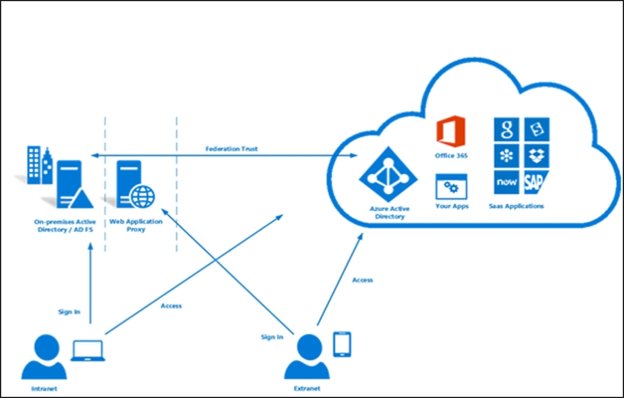

You manage a single-domain, on-premises Active Directory forest named contoso.com. The forest functional level is Windows Server 2016.
You have several on-premises applications that depend on Active Directory.
You plan to migrate the applications to Azure.
You need to recommend an identity solution for the applications. The solution must meet the following requirements:
✑ Eliminate the need for hybrid network connectivity.
✑ Minimize management overhead for Active Directory.
What should you recommend?
Correct Answer:
B
Note: This question is part of series of questions that present the same scenario. Each question in the series contains a unique solution that might meet the stated goals. Some question sets might have more than one correct solution, while others might not have a correct solution.
After you answer a question in this section, you will NOT be able to return to it. As a result, these questions will not appear in the review screen.
You have an Azure subscription named Project1. Only a group named Project1admins is assigned roles in the Project1 subscription. The Project1 subscription contains all the resources for an application named Application1.
Your company is developing a new application named Application2. The members of the Application2 development team belong to an Azure Active Directory
(Azure AD) group named App2Dev.
You identify the following requirements for Application2:
✑ The members of App2Dev must be prevented from changing the role assignments in Azure.
✑ The members of App2Dev must be able to create new Azure resources required by Application2.
✑ All the required role assignments for Application2 will be performed by the members of Project1admins.
You need to recommend a solution for the role assignments of Application2.
Solution: In Project1, create a network security group (NSG) named NSG1. Assign Project1admins the Owner role for NSG1. Assign the App2Dev the Contributor role for NSG1.
Does this meet the goal?
Correct Answer:
B
You should use a separate subscription for Project2.
HOTSPOT -
You manage a network that includes an on-premises Active Directory Domain Services domain and an Azure Active Directory (Azure AD).
Employees are required to use different accounts when using on-premises or cloud resources. You must recommend a solution that lets employees sign in to all company resources by using a single account. The solution must implement an identity provider.
You need provide guidance on the different identity providers.
How should you describe each identity provider? To answer, select the appropriate description from each list in the answer area.
NOTE: Each correct selection is worth one point.
Hot Area:
Correct Answer:
Box1: User management occurs on-premises. Azure AD authenticates employees by using on-premises passwords.
Azure AD Domain Services for hybrid organizations
Organizations with a hybrid IT infrastructure consume a mix of cloud resources and on-premises resources. Such organizations synchronize identity information from their on-premises directory to their Azure AD tenant. As hybrid organizations look to migrate more of their on-premises applications to the cloud, especially legacy directory-aware applications, Azure AD Domain Services can be useful to them.
Example: Litware Corporation has deployed Azure AD Connect, to synchronize identity information from their on-premises directory to their Azure AD tenant. The identity information that is synchronized includes user accounts, their credential hashes for authentication (password hash sync) and group memberships.
User accounts, group memberships, and credentials from Litware's on-premises directory are synchronized to Azure AD via Azure AD Connect. These user accounts, group memberships, and credentials are automatically available within the managed domain.
Box 2: User management occurs on-premises. The on-promises domain controller authenticates employee credentials.
You can federate your on-premises environment with Azure AD and use this federation for authentication and authorization. This sign-in method ensures that all user authentication occurs on-premises.

References:
https://docs.microsoft.com/en-us/azure/active-directory-domain-services/active-directory-ds-overview https://docs.microsoft.com/en-us/azure/active-directory/hybrid/whatis-fed
Note: This question is part of series of questions that present the same scenario. Each question in the series contains a unique solution that might meet the stated goals. Some question sets might have more than one correct solution, while others might not have a correct solution.
After you answer a question in this section, you will NOT be able to return to it. As a result, these questions will not appear in the review screen.
You have an Azure subscription that contains a resource group named RG1.
You create an Azure Active Directory (Azure AD) group named ResearchUsers that contains the user accounts of all researchers.
You need to recommend a solution that meets the following requirements:
✑ The researchers must be allowed to create Azure virtual machines.
✑ The researchers must only be able to create Azure virtual machines by using specific Azure Resource Manager templates.
Solution: On RG1, assign a custom role-based access control (RBAC) role to the ResearchUsers group.
Does this meet the goal?
Correct Answer:
B
Instead: On RG1, assign the Contributor role to the ResearchUsers group. Create a custom Azure Policy definition and assign the policy to RG1.
A company deploys Azure Active Directory (Azure AD) Connect to synchronize identity information from their on-premises Active Directory Domain Services (AD
DS) directory to their Azure AD tenant. The identity information that is synchronized includes user accounts , credential hashes for authentication (password sync), and group membership. The company plans to deploy several Windows and Linux virtual machines (VMs) to support their applications.
The VMs have the following requirements:
✑ Support domain join, LDAP read, LDAP bind, NTLM and Kerberos authentication, and Group Policy.
✑ Allow users to sign in to the domain using their corporate credentials and connect remotely to the VM by using Remote Desktop.
You need to support the VM deployment.
Which service should you use?
Correct Answer:
A
Azure AD Domain Services provides managed domain services such as domain join, group policy, LDAP, Kerberos/NTLM authentication that are fully compatible with Windows Server Active Directory.
References:
https://docs.microsoft.com/en-us/azure/active-directory-domain-services/active-directory-ds-overview